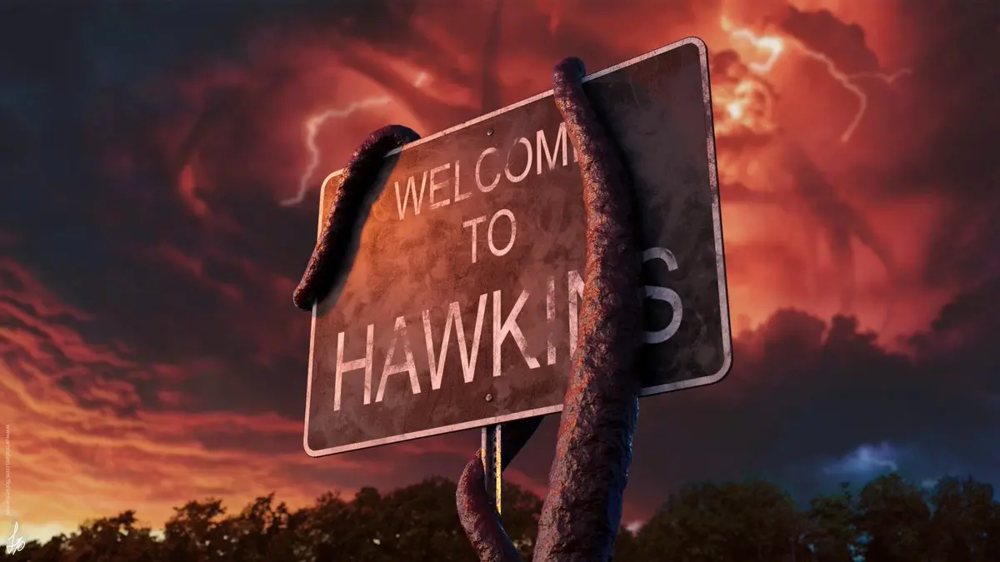

Curiosidades de la serie
Descubre datos fascinantes y secretos detrás de las cámaras de Stranger Things, desde curiosidades sobre los actores hasta detalles ocultos en la trama que quizá no conocías.
Curiosidades de la serie

Ubicación de la serie
Aunque la serie se sitúa en la ficticia ciudad de Hawkins, Indiana, gran parte del rodaje se lleva a cabo en el estado de Georgia, en las ciudades de Atlanta y sus alrededores. Algunas escenas interiores fueron grabadas en estudios, mientras que las escenas exteriores, como las de la escuela y la estación de policía, fueron filmadas en lugares de Georgia.